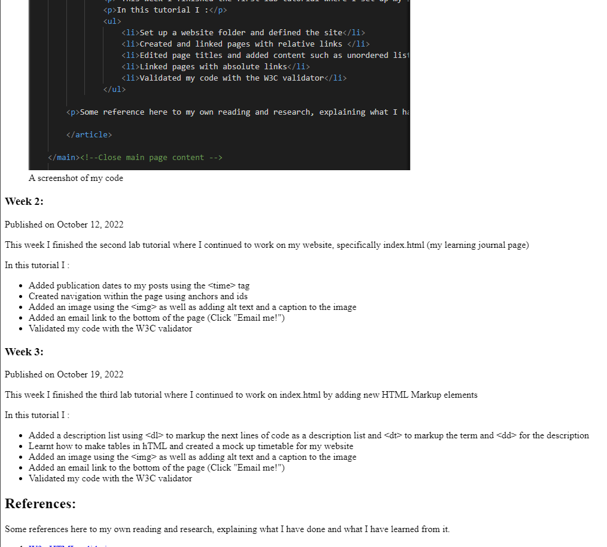

This week I finished the first lab tutorial where I set up my 3 page website. One thing I struggled with was remembering to put my files into the public_html folder on the brighton.domains file manager.
In this tutorial I :
Set up a website folder and defined the site
Created and linked pages with relative links
Edited page titles and added content such as unordered lists, paragraphs, and headings (using the <h1>, <h2> and <h3> tags)
Linked pages with absolute links
Validated my code with the W3C validator
A screenshot of my code
Week 2:
Published on
This week I finished the second lab tutorial where I continued to work on my website, specifically index.html (my learning journal page)
In this tutorial I :
Added publication dates to my posts using the <time> tag
Created navigation within the page using anchors and ids
Added an image using the <img> as well as adding alt text and a caption to the image
Added an email link to the bottom of the page (Click "Email me!")
Validated my code with the W3C validator
Week 3:
Published on
This week I finished the third lab tutorial where I continued to work on index.html by adding new HTML Markup elements
In this tutorial I :
Added a description list using <dl> to markup the next lines of code as a description list and <dt> to markup the term and <dd> for the description
Learnt how to make tables in HTML and created a mock up timetable for my website
Learnt how to add quotes into my HTML, which will be useful when i want to ad quotes from my own research
Learnt how to make an image into a link
Validated my code with the W3C validator

Week 4:
Published on
This week I finished the fourth lab tutorial where I added CSS files to my website
In this tutorial I :
Added 2 CSS files, normailze.css and stylesheet.css
Styled multiple elements to have different sized fonts, different background colours
Styled the links to not be underlined
Changed the main font to be a sans serif font
Validated my CSS with the W3C validator
Week 5:
Published on
This week I continued to work on my CSS stylesheet
In this tutorial I :
Added a fallback font
Learnt how to use webfonts using google fonts
Added paragraph styles including line height, margins and text alignment
Learnt how to float an image and wrap text
Validated my CSS with the W3C validator
Week 6:
Published on
This week I added the beginings or responisve design to my website. I mainly focused on laptop screen size formatting as there were many issues with the layout. to fix this I had to add new classes and divs to group things together correctly.
In this tutorial I :
Added the wireframes for different width screen layouts
Organised my large screen layout
Added media queries for different screen widths
Hid my table lement if the screen was too small
Made images flexible
Validated my HTML with the W3C validator
Validated my CSS with the W3C validator
Week 7:
Published on
This week I focused on flexible media as part of responsive web design.
In this tutorial I Learnt how to:
Clip full size images
Make felxible images with and without text wrapping
Make flexible video containers
Learnt about colour pallete generators, background images, repeating images and favicons
Week 8:
Published on
This week I worked on more responsive web design as well as my Tutorial page
In this tutorial I :
Added a card interface to my tutorial page
Learnt about multi-colum layouts
Validated my HTML with the W3C validator
Validated my CSS with the W3C validator
One thing I had to consider this week is legal issues surrounding images. I have to make sure that all the images I use in my website I am legally allowed to use. To solve this issue I have decided to use my own images and screenshots. If I do need to use an image that is not my own I will make sure that the image is either copyright free or the creative commons licence is consistent with the way I will be using the image and credit the copyright owner the correct way.
During my research, I came across an article on Developing Usable websites. In this article Cunliffe writes about the different models used to develop websites that are usable for the target demographic. Cunliffe mentions having user testing in all phases of development. User feedback can be used in the early planning stages of a website to evaluate the criteria of the websites as well as to work out what the end user wants. During development user feedback and testing can be used to evaluate parts of the website and make sure that the user can use the website. Once the website is finished user feedback can be used for additions as well as modifications to the site. It can also be used to correct any bugs or mistakes in the website. I chose to implement some of these methods in my website design process through peer review. By letting other people view and use my website during development I can see what changes need to be made in real time. I used people with varying knowledge into technology and website design to ensure that my website was usable by the majority of people. They viewed the website on multiple different browsers and devices to ensure that my mobile-first approach was implemented correctly. By using this model, I am ensuring that my website is the best it can be.
Week 9:
Published on
This week I created my basic contact page.
In this tutorial I :
Insert a form into the website
Add form elements such as text input and textarea
enhanced my basic from using HTML5's input types
Used CSS to style my form
Fixed a long standing issue where the heading of the table would not disappear in my media query. To find this solution is used Stack Overflow.
Validated my HTML with the W3C validator
Validated my CSS with the W3C validator
I used the HTML5 doctor's webpage on HTML5 form input types to learn more about the different attributes and how they appear on different devices. I also learnt about how these attributes mean that browsers and mobile phones show these differently. For example the date attribute is rendered differently in Chrome than Opera and is different from how a mobile phone would render it. I also learnt that on mobile phones the different attributes can cause the on screen keyboard to appear different. For example the Email attribute causes the keyboard to have a added "@" symbol as well as the "." symbol. It can also contain a ".com'' button depending on the make of the phone
Here is a video documenting the development of my form.